Pediatric Cancer Data Commons
Data Portal User Guide
v1.46.0 User Guide
Introduction
The Pediatric Cancer Data Commons (PCDC) brings together clinical, genomic, and imaging data from institutions around the world that are working to transform pediatric cancer research and outcomes. Headquartered at the University of Chicago, the PCDC works with international leaders in pediatric cancers and the US National Cancer Institute to develop and apply uniform data standards, facilitating the collection, combination, and analysis of data from many different sources.
By harmonizing existing clinical research data and leading international efforts to standardize data collection, we are breaking down long-standing barriers that have held back advancements in research on rare diseases. Our aim is to leverage this unique collaborative consortium-based approach to enable new and meaningful discoveries about pediatric cancers.
The PCDC Data Portal supports the management, analysis and sharing of data for the research community. The portal includes a data dictionary and data search functionality.
For additional information, users can watch this introductory video.
Access
The PCDC Data Portal can be accessed using a web browser by visiting https://portal.pedscommons.org/. New users to the PCDC Data Portal are prompted to login using an approved authentication provider (i.e., Google).

After successfully logging in with Google for the first time, users are prompted to associate their account with the PCDC Data Portal.
Registration of an account with the PCDC Data Portal requires users to provide their email (supplied by the authentication provider), first name, last name, and institutional affiliation (e.g. University of California Berkeley). Registration also requires that users read and acknowledge agreement with the PCDC Privacy Notice, the PCDC Terms and Conditions, and the Acceptable Use Policy.

Users who have previously registered an account will be taken directly to the main page of the PCDC Data Portal after authentication.
Users will initially have access to summary data only. Researchers can request access to line-level data by clicking the Request Access button on the Exploration page. See the Exploration section below.
Navigation
After successful login, users will see the main page.
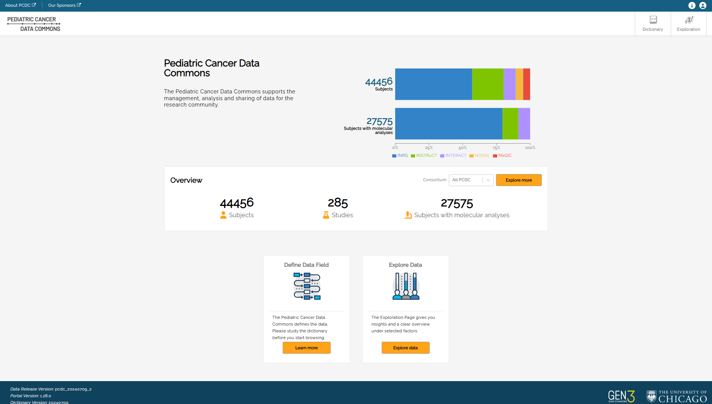
The main navigation buttons to PCDC Data Portal pages are in the upper right-hand corner of the page:
- Dictionary
- Exploration
Profile settings can be accessed by clicking the username at the top of the page. See the Profile section below.
Note: to change the magnification of text, access the browser controls and use the zoom function to increase or decrease the font size. The screenshot below shows the zoom control in the Chrome browser.

Dictionary
Dictionary is the data dictionary used to define the data in the portal, including what each entity (Node) represents, properties associated with the entities, and possible values.
The Dictionary is accessed by clicking the Dictionary button in the top-right hand corner of the PDCD Data Portal main page.

Example: for the data entity named “Cytology”, the dictionary includes seven properties as shown below.

Terms used in the dictionary that are defined in the NCIt (National Cancer Institute thesaurus) include a link next to the term showing the NCIt code. Clicking the link will open a browser tab to the NCIt site.
On the right side of the Table View are Download Templates for each data element.

Templates are available in JSON (JavaScript Object Notation) or TSV (tab separated values) format. Templates are used when submitting clinical trial data for use in the portal.
The data dictionary can be viewed as a table, (shown above), or in graphical format by clicking on the Graph View button in the upper left. The Graph View shows an overview of the data model, which can be zoomed in to see individual components of the model and how they relate to one another.

Clicking the Open Properties button will switch to the table view as shown above.

How to find an item
- In the main page click the Dictionary button. The Dictionary page is displayed.
-
Type the item you want to find in the Search in Dictionary field on the left of the page.

Items that match your search are displayed as you type:

-
Click the item in the list you want to display.

The Graph View area of the screen will highlight Nodes that include the search term(s).
The Search Results on the left side shows the number of matches in the Node title and description, as well as the number of matches in the node properties.

The Last Search field shows the number of Nodes where the term appears – in this example:

Click on the Node to see the properties.

Matching search results are highlighted in amber text. Click on the See All button to toggle between matched results and all properties.

Exploration
The Exploration button at the top of the home page takes the user to the main data page allowing users to see summary data.
Users can refer to this video for an overview of the Exploration functionality.
For users who do not have access to line-level data, the top of the Exploration page will display a Request Access button.
Clicking Request Access will redirect users to the PCDC Project Request Forms page. The page contains forms and instructions for requesting access to line-level data.
The Table View tab on the main page is restricted to approved researchers who have access to line-level data.
The current Release Version of the data is included at the bottom of the left panel.
Filters and Search
The Filters panel on the left side of the Exploration page can be used to narrow the Summary View results by selected variables. Filters act upon variables in the underlying data and are available for variables in the Subject, Disease, Molecular, etc. data domains. Use the expand icon (>) to see the controls available for a given filter.

Note: some filters, such as Age at Censor Status have a slider to select an age range. Age is shown in days.

Bin Size
A bin size limit of five has been implemented for all data filters as an additional measure of participant privacy. Bin size refers to the minimum sample size reporting threshold. A lock icon will appear next to the filter that includes less than five subjects.

Summary View
The main Exploration page shows a summary view of distributions across some key demographic variables for all cases in the PCDC that match the currently-selected filters.

Different variable types (e.g. continuous variables, discrete variables, categorical variables) will have different controls available. For example, Race is a categorical (enumerative) variable, and categorical variable filters can be selected using checkboxes with one checkbox per value within that variable. The user can select the values of a variable they are interested in as part of the population. Multiple selections within a single filter are treated as logical ‘ORs’. Therefore, a user who selects ‘Asian’ and ‘Black or African American’ would see a result set where the subjects have a Race value of either ‘Asian’ OR ‘Black OR African American’
Multiple selections made across multiple filters are treated as logical ‘ANDs’. Therefore, a user who selects ‘Asian’ and ‘Black or African American’ from the Race filter and who select ‘Male’ from the Sex filter would see a result set where the subjects have a Race value of either ‘Asian’ OR ‘Black or African American’ AND who have a Sex value of ‘Male’.
Using the above example, the Active filter at the top of the graph view shows “Sex is “Male” AND “Race is any of (logial OR) Black or African American, Asian”. The AND can be switched to OR by clicking on the AND button between the two parts of the expression. Each filter can be removed by clicking on the “x” at the end of the string.

For patient observations that may be captured longitudinally, for example Tumor Site within the Disease tab, users can restrict filtering activity to a specific disease phase (Initial Diagnosis or Relapse) with an Anchor filter by clicking one of the radio buttons under Disease Phase.
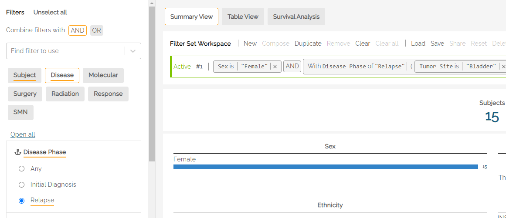
For example, a user who was interested in patients with relapse disease of the bladder would select Relapse under Disease Phase and Bladder under Tumor Site to see the count of subjects that have an observation of relapse at the bladder.
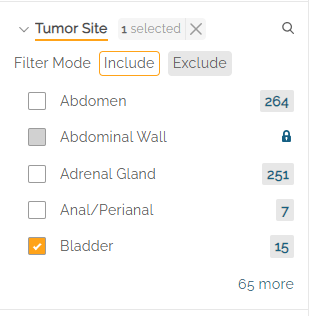
Note: when changing the Anchor filter (e.g., switching from Relapse to Initial Diagnosis), users must remove the associated filters, in this case: “Bladder”, in order to see the filter options available under the new Anchor.
Search
Clicking on the search icon to the right of a filter name (e.g. Tumor Site) allows users to search for a specific value in a list of categorical levels by keyword, Matching categorical level values will appear if there is a full or partial match, allowing the user to select it. The filter value can be selected by checking the box next to the name.

Once selected, the main page will show the filtered data set. To clear the search, the user can hit the "x" on the right side of the search box.
<! 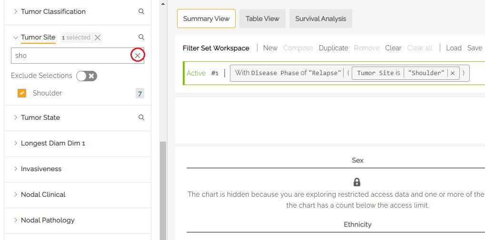 (commented out this image) ->
Selected Filters
An underline in the filter name indicates that filters are active within that tab. In the below example, the Subject and Disease tabs have active filters. Clicking into the tabs will show which filters are selected (also underlined). In the example below, Initial Diagnosis is selected, along with Histology from within the Disease tab.
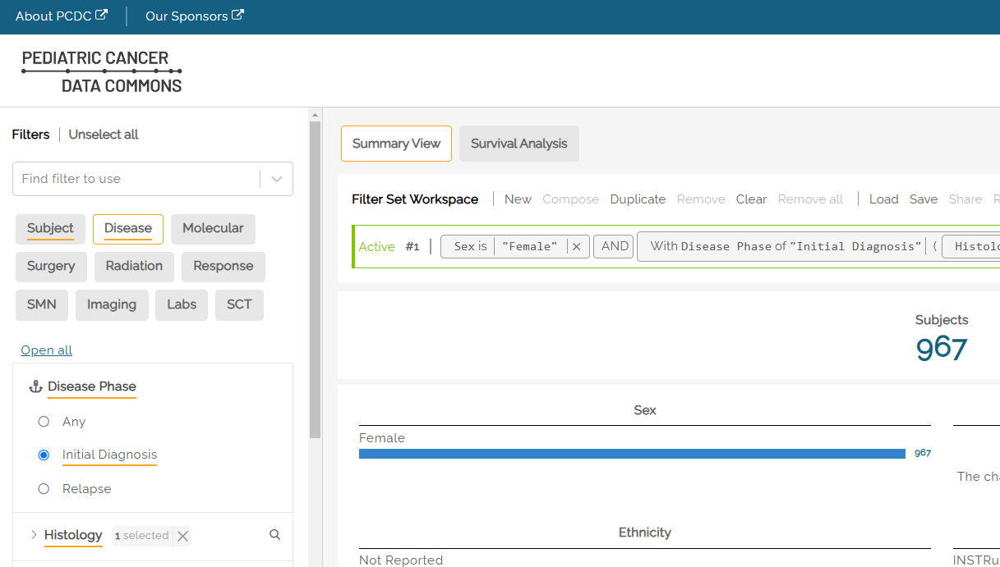
Interdependent Filters
Some filters have an interdependency. Example: selecting the 11q deletion molecular abnormality should be followed by a selection of Absent, Present, or Unknown from the Molecular Abnormality Result filters.

Filter by Consortium
The left panel includes a Consortium filter in the Subject tab which allows users to select the disease consortium data from which to create a cohort. Data is available from INRG (International Neuroblastoma Risk Group), INSTRuCT (INternational Soft Tissue saRcoma ConsorTium), MaGIC (Malignant Germ Cell International Consortium), and NODAL (hodgkiN lymphOma DatA coLlaboration) subjects.
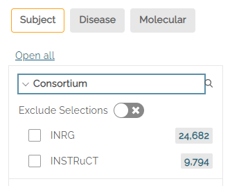
Include or Exclude Filters
Most filters have an Include or Exclude mode below the filter name. By default, Include is selcted. Clicking on Exclude will show results for all but the selected filters.
Filters Set Workspace
Users can refer to this video for an overview of the Filter Sets and Survival Curve functionality.
The Filter Set Workspace allows the user to manage multiple filter sets and switch among available filter sets to see summary statistics based on the filters selected in each set.
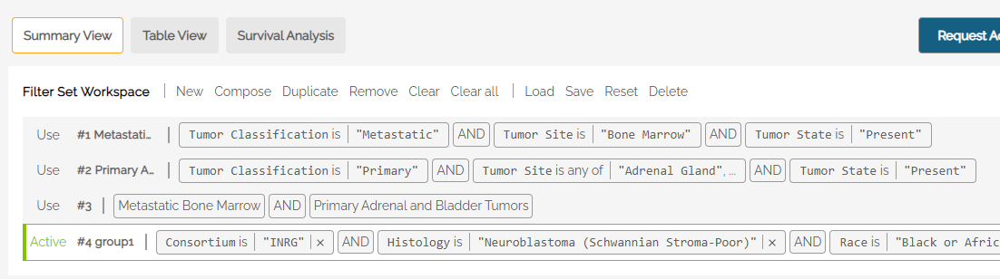
Use the resizing handle in the lower right corner of the Workspace area to resize the window.

The active filter is labeled in green on the far left. Each filter shows the expression statement that describes the filter set. Example:

Filter Set Workspace commands allow the user to load, save and make changes to filter sets. The following commands are included:
- New: When at least one filter set is active, pressing New will add another, empty set.
- Compose: Allows the user to combine two or more saved filter sets using AND/OR logic.
- Duplicate: Copies the active filter set. Note: an empty set cannot be duplicated.
- Remove: Removes the active filter set from the workspace and makes the filter set at the top of the list active.
- Clear: Clears the filter selections from the active filter set.
- Remove all: Removes all filter sets from the Workspace.
- Load: Loads a saved filter set to the Workspace. The filter set can be the user's own saved filter set or a filter set defined by a shared token from another user (see "Share" below).
- Save: Saves the active filter set that has been newly created (i.e., not yet named). When a saved filter set is active, the Save button changes to Update.
- Share: Generates a token that can be emailed to other users to re-create the selected filter set. Only saved filter sets can be shared.
- Reset: When a change is made to the active filter, Reset will revert any changes to the saved version of the filter set. If the filter set was not previously saved, Reset will not be active.
- Delete: Deletes the selected filter set, removing it from the screen and from the user's saved filters.
Saving a Filter Set
Once a set of filters has been selected, a user can save the set by clicking Save. The user will be prompted to enter a name for the saved filter set. A description can also be added.

When changes are made to a saved filter set, the Workspace will indicate the change by making the Reset button active. Clicking on Reset will revert any changes made to the original, saved filter set.
To save changes to a filter set and keep the original, users can 1) use the Duplicate function, make changes to the new filter set, and 2) Save the new filter set with a new name.
1) Use Duplicate to Create a copy of the active filter set
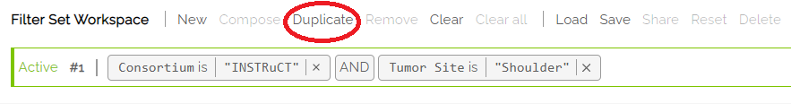
2) Make changes to the new filter set and hit Save. Note, the new filter set has no name until it is saved.

Using Compose to Combine Filter Sets
The Compose function allows users to combine filter sets using AND/OR logic. Example: Selecting Compose in the Filter Workspace, the two separate filters shown below can be combined into one using a logical AND. Click Done when the desired filters are selected.

The resulting filter is added to the Workspace and made Active. It can now be saved to the user's list of filters.
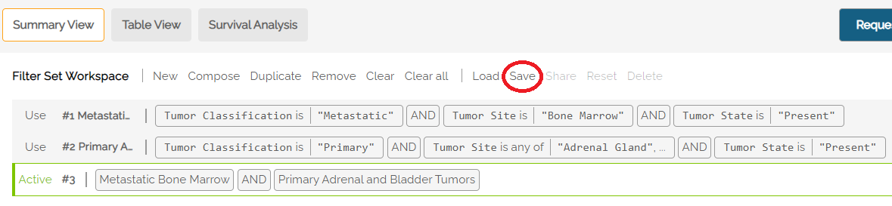
Note: when using a Composed filter, the left filter panel becomes inactivated.
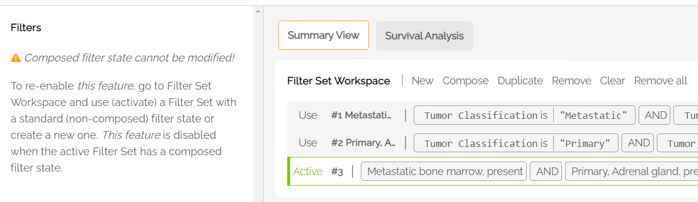
Explore in An External Data Commons
Some subjects within the PCDC can be further explored in external Data Commons'. Currently, Gabriela Miller Kids First (GMKF) and the Genomic Data Commons (GDC) are available for exploration.
To explore subjects within an external commons:
1) Create a data set using the Filter Set Workspace. It is recommended users save their data set before using the "Explore in" function. Set the desired data set as "Active" by clicking on it within the Workspace.
2) Click on the Explore in button in the upper right part of the Exploration page. A pop-up window will open. The drop-down menu is used to select the external data commons.

3) Download the manifest. The "Open in new tab" button will activate after downloading the file.
4) For GMKF, click on the Participant tab on the left side of the GMKF website, then select "Upload a participant list" to proceed.
5) For GDC, click on the Import New Cohort button ("Up" arrow) at the top of the GDC website to upload the manifest file.

6) For Imaging Data Commons (IDC), a manifest file can be generated, however there is currently no functionality in the IDC portal to upload a file.
Survival Analysis
The PCDC platform includes a Survival Analysis tool that can display survival curves and Number at Risk tables.
When first accessing the survival curve generator, users must agree to follow the Acceptable Use Policy. Subsequent sessions will include a reminder of the terms whenever the Survival tab is first used.
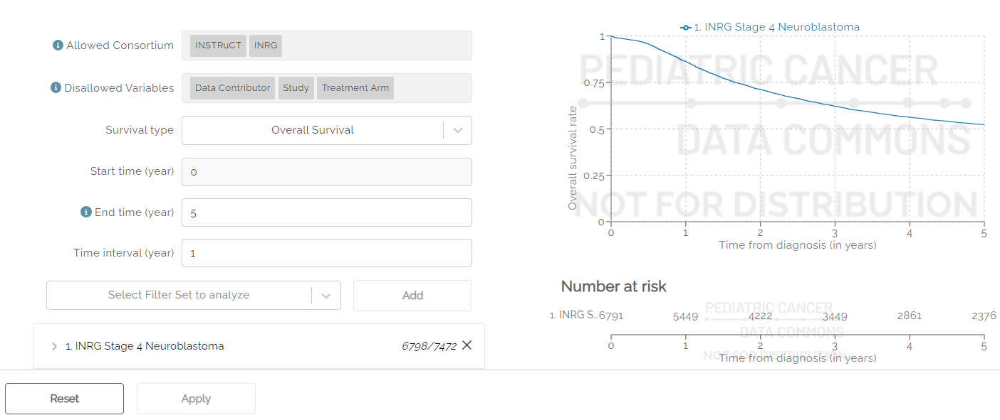
To create a survival curve, users must first select at least one filter set to analyze. Filter Sets can be created and saved using the procedure described above. Note: Only saved filter sets can be used to create a Survival Curve.
Use the drop down labeled “Select Filter Set to Analyze” to select a saved filter set, then click the Add button to add the filter set. Optionally, a user may select “All Subjects” to see the entire data set. Additional filter sets can be added using the steps above.

Once selected, users can see the survival curve by hitting the Apply button at the bottom of the screen. Note: When changes are made to filter sets that are currently selected for the Survival curve, users must hit the Apply button after editing to see the changes reflected in the curve.
Multiple data sets can be selected and shown simultaneously. In the example below, two data sets are used: one for male and one for female participants.

Options
The survival curve can be adjusted using the options available.

The Allowed Consortia field indicates which disease groups have data available to create a survival curve.
The Disallowed Variables field shows which variables cannot be used to create a survival curve.
The Survival type drop down can be used to select Overall or Event-Free survival.
Start time is used to select the start time of the x-axis. Default is zero (0).
End time is used to select the maximum time (in years) that will appear on the x-axis. The default is five years. If left blank, the maximum number of years will be shown for which data is available.
Time interval is used to determine the frequency of hash marks appearing on the x-axis, both on the survival curve and in the Number at risk table shown below the curve. Default is one year.
User Menu
The User Menu can be accessed by clicking on the user icon in the top right corner of the screen. The View Profile option allows users to make changes to their name and institutional affiliation. The View Profile page can also be used to create API Keys.

Data Requests
The Data Requests screen allows users to see the status of their data requests and, when approved, download data. At the top of the screen is a toggle button to see All Requests or only Approved Requests.

Only users who are authorized to receive requested data will see the Download Data button activated when the data is ready.

Message Center
The Message Center screen shows system alerts that may appear while using the Portal. Alerts may include downtime warnings advising users to save their work.
Documentation

The Documentation menu allows users to access reference documents related to the Data Portal such as the Privacy Notice and Terms and Conditions. Clicking on any of the documents in the list will redirect users to the D4CG Documentation site.